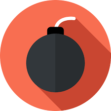

Welcome to the Computer Security Website. This site contains everything you need to know about computer security and links you articles, videos and news on the topic.
Virus: human-assisted propagation (embedded in email attachment)
Rootkit: modifies operating system to hide its existence
Worm: automatic propagation without human assistance
Trojan: provides desirable functionality but obscures malicious operation
Examples of Malware
Insider Attacks
Backdoors
An insider attack is a breach of security that is conducted or enabled by someone who is part of the organisation that controls or builds the asset that should be protected.
A backdoor (or trapdoor ) is a hidden feature or command in a program that enables a user to perform actions which they are not normally authorised or permitted to do - actions for which ordinary users do not have privilege.
In the case of malware, an insider attack refers to a security hole that is created in a software system by one of the software programmers.
When used in the permitted way, this program behaves as expected with only the mandated privileges.
But if the hidden feature is activated, the program executed unexpected (such as performing a privilege escalation)- usually in contravention of security policies.
Benign example: Easter Eggs in DVDs and software
Logic Bombs
A logic bomb is a program that enacts a malicious action based on a certain logic condition.
A typical example combines a logic bomb and a backdoor, where the programmer codes a logic bomb to crash the program on a pre-determined date.

Computer Viruses
A computer virus is computer code that can self-replicate by modifying other files or programs to insert code that is capable of further replication.
This self-replication capability is what distinguishes computer viruses from other types of malware, such as logic bombs.
A further defining property of a virus is that its replication requires user assistance , such as opening an email attachment or inserting a usb drive.
Computer Viruses - Infection Types
Overwriting
Pre-pending
Infection of libraries
Macro viruses
Destroys original code
Maintains original code, possibly in a compressed form
Allows virus to be resident in memory
Infects MS Office documents, often installs in main document template
Computer Viruses - Concealment
Encrypted virus
Polymorphic virus
Metamorphic virus
Consists of decryption engine and encryption body
Encrypted virus with random variations of the decryption engine (E.g. padding code)
Different virus bodies
Random generation of encryption key
Detection using CPU emulator
Iteration include code permutation and instruction replacement
Detection attempts to identify virus by finding decryption engine
Difficult to detect
Computer Worms
A computer worm is a form of malware that does not require user interaction and does not depend on other programs for propagation.
Due to these properties, computer worms are not technically computer viruses. They are often confused for viruses due to their self-replication property.
Worms commonly carry malicious payloads, which result in the deletion of files or installation of backdoors.
Trojan Horses
A Trojan Horse (or Trojan) is a form of malware that appears to perform some useful task, but which also performs a malicious attack, such as creating a keylogger.
Trojan horses are often installed (deliberately or accidentally) by a user or administrator, but can also be installed as the payload of other malware.
This is a ploy used by attackers to secretively gain accesss to the system using a another user's account. This is psssible due to weak user passwords, which are easily guessed by deduction from user information and trial-and-error.
Denial-of-Service Attacks
This is a technique whereby attackers flood the web server with communication to slow down the extension of the service.
This is becoming increasingly prevalent on the internet as websites, in general, are open portals and are thus susceptible to abuse.
E-mail hacking
Email is one of the most widely used features of the internet. Access to e-mail allows one to communicate and interact with millions of people globally and, as such, creates the following threats:
Impersonation: A sender can create a false return adress by either modifying the header in transit or if the sender connected directly to the Simple Mail Transfer Protocol (SMPTP) on the receiving computer to re-enter a false email address. Thus, email addresses cannot be trusted fully.
Eavesdropping: Email subjects and body are transmitted in plain text if not encrypted. Thus, the contents of an email can be intercepted and read or changed. The header could also be modified to obscure or change the the sender; or change the intended recipient.